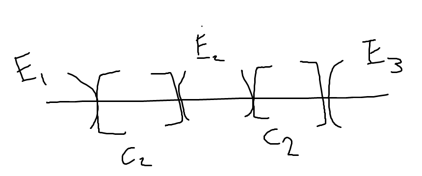
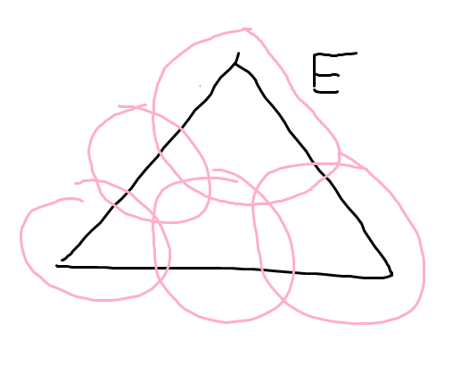

6 Open/closed Sets
6.0.1 Def “open ball”
\(E \subseteq X\) is an open ball around \(x \in X\) if there exists \(\varepsilon >0\) such that \(B(x, \varepsilon) = \{y \in X: d(x,y) < \varepsilon\} = E\)
Example 1a \((X,d)=(\mathbb{R}, d^u)\) \(B(x,\varepsilon) = (x-\varepsilon, x + \varepsilon)\)
Example 1b \((X,d)=([0,10], d^u)\) \(B(1/2, 3/4) = [0,5/4)\)
(adding and subtracting epsilon of 3/4 from 1/2, but since -1/4 is outside our interval, just get as close as you can with 0, closed. still an open ball, just because it’s in [0,10]. but this would not be an open ball in \(\mathbb{R}\))
Example 2 \((X,d) = (\mathbb{R}^2, d^{euc})\)

6.0.2 Def “interior point”
Fix \(E \subseteq X\). Say \(x\) is an interior point of \(E\) if there exists some \(\varepsilon >0\) such that \(B(x,\varepsilon) \subseteq E\).

\(int(E) = \{x \in X: x \text{ is an interior point of } E\}\).
If \(x \in B(x,\varepsilon)\subseteq E)\) then \(int(E) \subseteq E\).
6.0.3 Def “open set”
A set \(E \subseteq X\) is an open set if for each \(x \in E, x \in int(E)\)
\(E \subseteq int(E) \subseteq E\) - so an open set has \(E = int(E).\)
Whether a set is an open set depends on \((X,d)\).
- In \((\mathbb{R}, d^u): [0,1)\) is NOT open because any \(B(0,\varepsilon)\) is not contained in [0,1).
- In \(([0,\infty),d^u): [0,1)\) IS OPEN because any \(B(0, \varepsilon)\) IS contained in [0,1) since nothing outside of \([0, \infty)\) exists in this metric space.
Example 3 Let \(X\) be a finite or countable set. Let \(d\) be the discrete metric.
In this case, each \(\{x\}\) would be an open set. Choose \(\varepsilon = 1/2\). Then \(B(x,1/2) = \{x\} \subseteq \{x\}\).
What about \(E \subseteq X\)? This would also be an open set since for each \(x \in E, B(x, 1/2) = \{x\} \subseteq E\)
Example 4 Fix \((X,d)=(\mathbb{R}, d^u)\). Let \(E \subseteq \mathbb{R}\) finite or countable. Then \(E\) is not open.
\(E\) is open iff \(E =int(E)\). Fix \(x\in E\) and suppose \(x \in int(E)\). Then, there exists \(\varepsilon >0\) such that \(B(x,\varepsilon) \subseteq E\). But this can’t be the case since \(B(x,\varepsilon)\) is UNCOUNTABLE while \(E\) is countable. So, clearly, \(x \notin int(E)\).
Basically this means you’ll never have an open ball in a finite or countable set (at least not in \(\mathbb{R}\)).
Example 5 Fix \((X,d)\). Fix \(E \in X\). Question: is \(int(E)\) an open set?
Fix \(x\in int(E)\). Need to show, \(x \in int(int(E))\).
Since \(x \in int(E)\) there exists \(\varepsilon >0\) such that \(B(x,\varepsilon) \subseteq E\).
Fix \(y \in B(x, \varepsilon)\). Then there exists \(\varepsilon' >0\) such that \(B(y, \varepsilon') \subseteq B(x,\varepsilon) \subseteq E.\) So, \(y \in int(E)\).
Yes! Since \(int(int(E))=int(E)\)
6.0.4 Prop 1 “union/intersection of open sets open”
Fix a metric space \((X,d)\)
- \(\emptyset, x\) are both open
- an arbitrary union of open sets is open
- a finite intersection of open sets is open
this tells you that we have defined open sets so that they form a “topology”
Example 6 \((\mathbb{R}, d^u)\)
\(U_n = (-1/n, 1/n)\) for each \(n\in\mathbb{N}\). \(B(0,1/n)\), so open sets.
\(\cap_{n \in \mathbb{N}}(-1/n,1/n) = \{0\}\) for some reason this is NOT open. apparently we showed before that singleton sets are not open in \(\mathbb{R}\) with the usual metric.
6.0.5 Def “Closed Set”
A set \(E\) is closed if \(X \setminus E\) is open.
Example 7 Call \(E\) a closed ball around \(x\) if there exists some \(\varepsilon>0\) such that \(B[x, \varepsilon] = \{y \in X: d(x,y) \leq \varepsilon \} = E\)
Claim: a closed ball is a closed set.
To show: \(U = \{y \in X: d(x,y) > \varepsilon \}\).
Fix \(z \in U\).
To show: there exists an \(\varepsilon'\) such that \(B(z, \varepsilon') \subseteq U\).
Take \(\varepsilon'=d(x,z)+\varepsilon\) and notice that since \(z\in U, \varepsilon' > 0\).
Fix \(w \in B(z, \varepsilon')\) to show \(w \in u\) need \(d(x,w) > \varepsilon\).
Notice \(d(x, w) + \varepsilon' >_{\text{by fact that } w \in B(??)} d(x,w) + d(w,z) \geq_{\text{by triangle}} d(x,z) \Rightarrow d(x,w) > d(x,z)-\varepsilon' = \varepsilon\)
6.0.6 Prop 2 “union/intersection closed sets closed”
Fix a metric space \((X,d)\)
- \(\emptyset, X\) are closed sets
- the finite union of closed sets is closed
- an abitrary intersection of closed sets is closed

- \(C_1\) closed, then \(E_1 \cup E_2 \cup C_2 \cup E_3\) is open
- \(C_2\) closed, then \(E_1 \cup C_1 \cup E_2 \cup E_3\) is open
Example 8 Countable union of closed sets may not be closed. \((\mathbb{R}, d^u), E_n[-1+ 1/n, 1 - 1/n]\)
\(\cup_{n\in\mathbb{N}} E_n = (-1,1) \rightarrow\) not closed.
6.0.7 Prop 3 “closed \(\iff\) lim in \(E\)”
A set \(E \subseteq X\) is closed if and only if, for any convergent sequence, \((x_n: n\geq 1)\) with \(x_n \in E, \lim_{n \rightarrow \infty} \in E\).
Proof
Step 1: Fix \(E\) closed. Fix \((x_n: n\geq1)\) convergent with each \(x_n\in E\).
want to show: \(\lim_{n \rightarrow \infty} x_n \in E\)
Suppose for contradiction that \(\lim_{n \rightarrow \infty} x_n = x^* \in X\setminus E\). We will show there is \(n\) with \(x_n \in X \setminus E\)
Notice: \(X \setminus E\) is open (since \(E\) is closed.) So, there exists \(\varepsilon > 0\) such that \(B(x^*, \varepsilon) \subseteq X\setminus E\)
By definition of the limit, since \(\lim_{n \rightarrow \infty} x_n = x^*\) there exists some \(N\) such that for all \(n \geq N, d(x_n, x^*) < \varepsilon\).
This implies that for all \(n\geq N, x_n \in B(x^*, \varepsilon) \subseteq X \setminus E\). But this is a contradiction since it was given that each \(x_n\in E\)
Step 2: Suppose that for each convergent sequence \((x_n: n\geq 1)\) with each \(x_n \in E, \lim_{n\rightarrow \infty} x_n \in E\)
To show: \(E\) is closed (or \(X\setminus E\) is open)
Suppose \(X \setminus E\) is not open. So there exists \(x \in X \setminus E\) such that for each \(n \in \mathbb{N}, B(x, 1/n) \cap E \neq \emptyset\)
Choose \(x_n \in B(x, 1/n) \cap E\) for each \(n\in\mathbb{N}\).
Have a sequence \((x_n: n\geq 1)\) in \(E\).
\(\lim_{n\rightarrow \infty} x_n = x \in X\setminus E\). This contradicts the fact that contains limits of any sequence in \(E\).
6.0.8 Def “adherent point”
Call \(x\in X\) an adherent point of \(E\), if, for each \(\varepsilon >0, B(x, \varepsilon) \cap E \neq \emptyset\).
6.0.9 Def “closure”
The closure of \(E\) is \(cl(E) = \{x \in X: x \text{ is an adherent point of } E\}\).
6.0.11 Prop 4 “int(E) largest open set contained”
Fix \(E \subseteq X\)
- the \(int(E)\) is the largest open set contained in \(E\).
- the \(cl(E)\) is the smallest closed set that contains \(E\).
6.1 Compactness
6.1.1 Def “open cover”
Fix \(E \subseteq X\). Call \(\{F_i: i \in I\}\) a cover of \(E\) if each \(F_i \subseteq X\) and \(E \subseteq \cup_{i \in I} F_i\).
Call \(\{F_i: i \in I\}\) an open cover of \(E\) if it is a cover and each \(F_i\) is open.

6.1.2 Def “Compact”
Call \(E \subseteq X\) compact if every open cover admits a finite subcover.
That is, if \(\{F_i: i \in I\}\) is an open cover of \(E\) then there exists finite \(J \subseteq I\) such that \(\{F_i: i \in J\}\) is also a cover of \(E\).
Example 9 Let \((X,d) = (\mathbb{R}, d^u)\)
Let \(E = (0,1)\). \(\{\mathbb{R}\}\) is an open cover of \(E\) (trivial example.)
\(\{(1/n,1): n \in \mathbb{N}\}\) is an open cover of \(E=(0,1)\). (note that \(\cup_{n\in\mathbb{N}}(1/n,1)=(0,1)\))
For any \(J \subseteq \mathbb{N}\) finite, \(\cup_{n\in J} (1/n, 1) = (1/m, 1)\) where \(m\) is the max number in \(J\).
6.1.3 Def “bounded set”
Call \(E \subseteq X\) bounded if there exists \(x \in X\) and \(r>0\) such that \(E \subseteq B(x,r)\)
6.1.4 Prop 5 “compact \(\Rightarrow\) closed and bounded”
If \(E\) is compact then \(E\) is both closed and bounded.
Example: \((X, d) = (\mathbb{R}, d^u)\) is closed, but not bounded so it’s not compact. (remember, \(\mathbb{R}\) is both closed and open)
Example 10a Will show \(E\) can be close and bounded but need not be compact. Let \(X = \{1/n, n\in\mathbb{N}\}\), \(d\) = discrete metric.
Then \(E=X\) is closed. It’s also bounded: pick any \(x \in X\) and get \(E \subseteq B(x,2)\). But, it doesn’t admit a finite subcover: \(\{\{1/n\}: n \in \mathbb{N}\} \rightarrow\) covers \(E\) and is open.
Example 10b \((X,d) = (\mathbb{R}, d^u)\) \(E = \{1/n: n \in \mathbb{N}\}\) then a cover is \(\{1/n: n \in \mathbb{N}\}\) but this is not open.
- all singleton sets (and even all finite sets) are NOT open for some reason?????????
6.1.5 Thm “Heine-Borel: compact \(\iff\) closed and bounded”
Let \((X,d)=(\mathbb{R}^n, d^{euc})\). A set \(E \subseteq \mathbb{R}^n\) is compact \(\iff\) it is closed and bounded.
- Note that this an iff relationship only if you are in \(\mathbb{R}^n\). Not necessarily true outside of \(\mathbb{R}^n\)